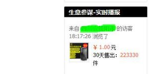

现在家里几乎都有电脑，但是，你听说过远程出租电脑吗？而且靠这个生意赚到了钱，居然一年可以赚200多万你相信吗？村长刚开始也不信，但是，在偏门屋一切皆有可能，下面，村长就给大家介绍一下这个偏门生意——远程出租电脑，它是如何一年赚200多万的？
村长也是做网络的，所以大概也了解远程出租电脑的具体流程：
首先，需要准备高配置的电脑，说白了就是比较贵的电脑，再次，你需要一定的计算器技术，有了这两样就可以运作了。
最后就是有个推广渠道，比如：淘宝店铺。
村长随便淘宝了一下，啥也不说了，上图：
远程出租电脑，它是如何一年赚200多万的？
你没有看错，1块，一块钱你买不了吃亏，一块你也买不了上当，没错就是1块。而且店主还承诺免费：用2个小时，尼玛，这是要疯啊，村长第一眼感觉：这店主不赔死？这咋赚钱，一块，什么时候能把电脑的成本钱赚回来呢？
双路服务器租用
但是，等村长看到销量以后，闭住了嘴巴，废话不说了，用图说话，以下截图：

远程出租电脑
没错，你没有看错，30天销量，223330，没有少0，20多万，就是20多万，这是抢钱啊？
一个月20多万，那么一年是多少呢？240万，就当200万吧，尼玛，这样一对比，破电脑才多少钱呢？
那么，什么人会用到远程出租电脑呢？
第一：玩游戏的人群，一般大部分是学生、上班族。
第二：做设计、做动画的人群，因为这类人群需要高配置的电脑，而高配置的电脑太贵，所以，只需花一块钱就能用，多美的事呢。
远程出租电脑这个项目到此就介绍完了，总之，做这个生意，一般的人做不了，只有一定电脑技术的人才可以做，所以一年赚200多万看似很简单，真正要做，也需要考虑很多条件。
当然，如果你没有这个条件，只要你想做，你就是要做，你也可以花钱请人做啊，给他一点工资，或者实在不行，五五分也可以。